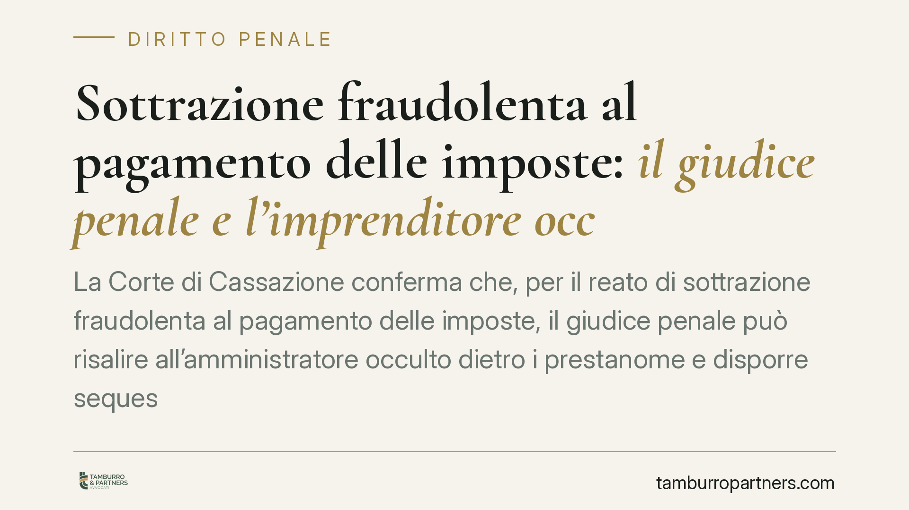

Sottrazione fraudolenta al pagamento delle imposte: il giudice penale e l'imprenditore occulto
La Corte di Cassazione conferma che, per il reato di sottrazione fraudolenta al pagamento delle imposte, il giudice penale può risalire all'amministratore occulto dietro i prestanome e disporre sequestri senza un previo accertamento tributario formale. Una pronuncia che incide sullo schema evasivo 'apri e chiudi' e anticipa le conseguenze cautelari a carico di chi gestisce di fatto l'impresa.

Il caso e il principio
La Corte di Cassazione, Sezione penale competente in materia tributaria, è tornata sul reato previsto dall'art. 11 del D.lgs. 74/2000. Il principio è netto: nello schema evasivo definito 'apri e chiudi' il giudice penale può individuare l'amministratore di fatto che si cela dietro una catena di prestanome e disporre misure cautelari reali, senza attendere alcun accertamento formale dell'Agenzia delle Entrate.
*Nota di accuratezza:* al momento della redazione la motivazione risulta in corso di pubblicazione. Chi intenda utilizzare il precedente in sede difensiva verifichi Sezione, numero e anno della sentenza nelle banche dati ufficiali prima di citarlo in atti.
Inquadramento normativo
L'art. 11, comma 1, D.lgs. 74/2000 punisce chi, al fine di sottrarsi al pagamento di imposte sui redditi o sul valore aggiunto, o di interessi e sanzioni amministrative relativi a dette imposte, per un ammontare complessivo superiore a 50.000 euro, aliena simulatamente o compie altri atti fraudolenti sui propri o altrui beni idonei a rendere in tutto o in parte inefficace la procedura di riscossione coattiva. Il comma 2 disciplina invece le false attestazioni rese nell'ambito della transazione fiscale, con una soglia di rilevanza distinta: l'articolo qui trattato riguarda esclusivamente l'ipotesi del comma 1.
Si tratta di un reato di pericolo: non è necessario che la riscossione sia effettivamente frustrata, ma è sufficiente che l'atto fraudolento sia *idoneo* a comprometterla. L'idoneità va accertata in concreto, valutando la natura dell'operazione e il patrimonio sottratto alla garanzia dell'Erario.
L'autonomia del giudice penale rispetto al procedimento tributario trova fondamento nell'art. 20 del D.lgs. 74/2000, che esclude la sospensione del processo penale in attesa della definizione dell'accertamento fiscale. Da qui deriva che l'esistenza del debito e la qualifica di amministratore di fatto possano essere ricostruite autonomamente dal giudice, sulla base degli elementi probatori acquisiti.
Amministratore di fatto e prestanome
Lo schema 'apri e chiudi' consiste nella costituzione di società destinate a operare per un periodo limitato, accumulare debiti tributari e poi cessare, lasciando sul campo prestanome privi di patrimonio. Il prestanome figura formalmente come amministratore, ma non esercita alcun potere gestorio reale.
Dietro questa architettura opera l'amministratore di fatto: il soggetto che, pur privo di cariche formali, esercita in modo continuativo i poteri di direzione dell'impresa. La Cassazione ribadisce che la responsabilità penale segue l'esercizio effettivo del potere, non la titolarità formale. Il giudice può quindi imputare la condotta al dominus occulto e attingere il suo patrimonio con il sequestro.
Sequestro diretto e per equivalente
Sul piano cautelare occorre distinguere. Il sequestro preventivo diretto colpisce il profitto del reato, ossia il risparmio d'imposta, dove sia individuabile e nella disponibilità del reo. Quando il profitto non è reperibile in forma diretta, interviene il sequestro per equivalente, che aggredisce beni dell'indagato fino alla concorrenza del valore corrispondente.
Entrambe le misure sono funzionali alla confisca prevista dall'art. 12-bis D.lgs. 74/2000, obbligatoria per i reati tributari. La confisca per equivalente presuppone l'impossibilità di apprendere direttamente il profitto e non può eccedere il relativo valore. La quantificazione del profitto diventa quindi un terreno di confronto tecnico centrale, poiché incide sull'ampiezza del vincolo.
Implicazioni pratiche
Il venir meno di una pregiudiziale tributaria comporta che le conseguenze cautelari possano manifestarsi prima e indipendentemente dalla chiusura dell'accertamento fiscale. Chi ha gestito di fatto un'impresa poi cessata con debiti erariali può vedere sottoposti a sequestro beni personali sulla base della ricostruzione operata in sede penale, anche in assenza di un atto impositivo definitivo.
Cosa fare in concreto
- Verificare la coerenza tra ruolo formale e gestione effettiva nelle società partecipate, documentando chi esercita realmente i poteri decisionali.
- Conservare traccia delle operazioni patrimoniali rilevanti, per poterne dimostrare la natura non simulata né fraudolenta.
- Controllare il superamento della soglia di 50.000 euro di imposte, interessi e sanzioni, presupposto di punibilità del comma 1.
- Esaminare, in caso di misura cautelare, i presupposti del sequestro e la quantificazione del profitto contestato.
- Distinguere la posizione del prestanome da quella del gestore effettivo, perché i profili di responsabilità divergono.
Disclaimer
Contributo informativo a cura di Tamburro & Partners - Avv. Giuseppe Tamburro. Non costituisce parere legale.
Ogni condominio ha una storia a sé.
Se gestisci un'amministrazione e vuoi un confronto su una specifica questione condominiale, scrivi allo studio. Ti rispondiamo entro un giorno lavorativo.